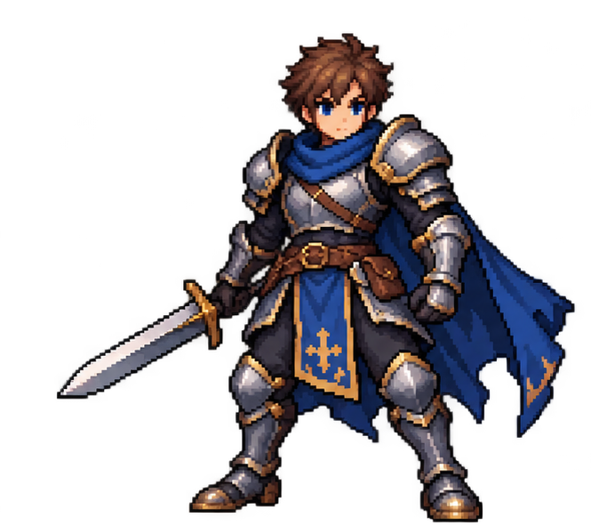
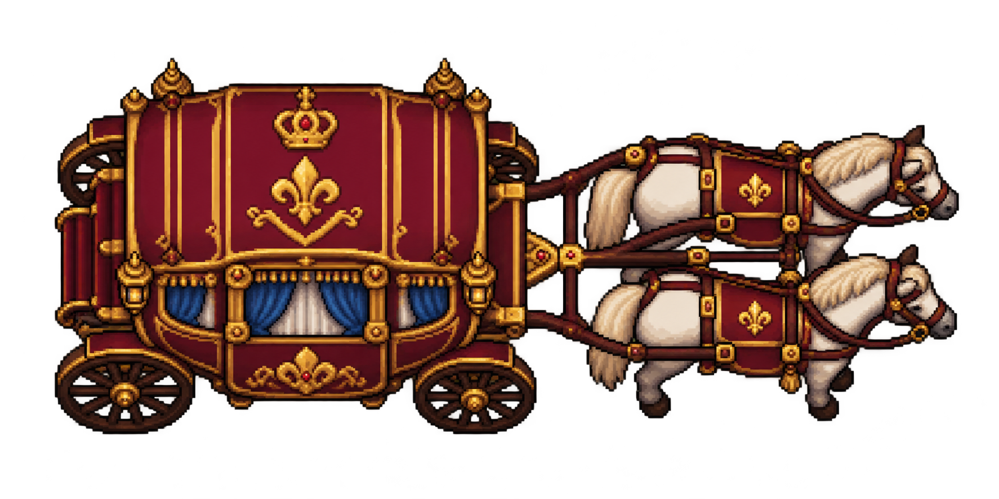
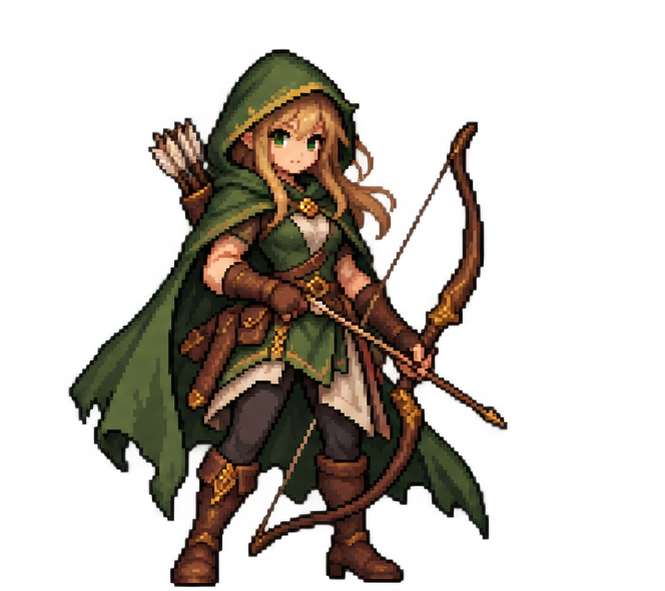
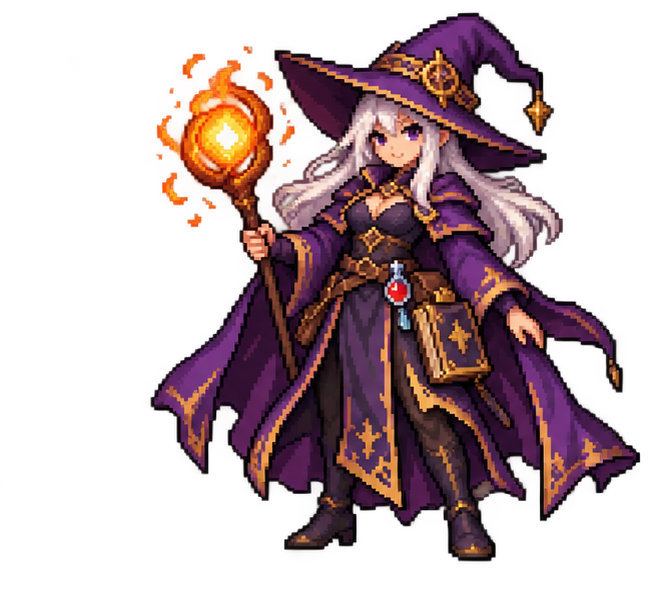
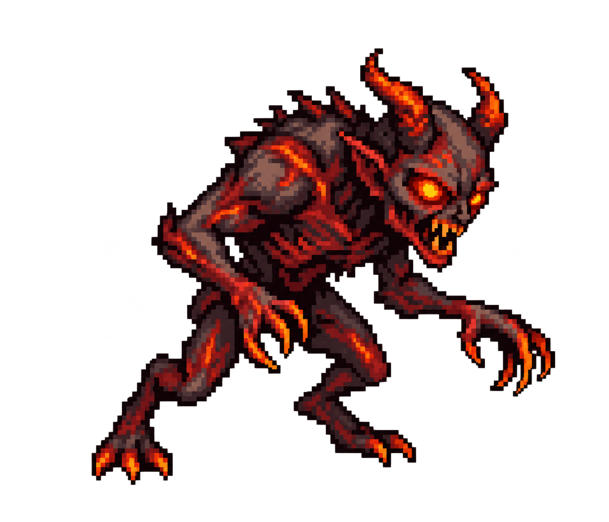
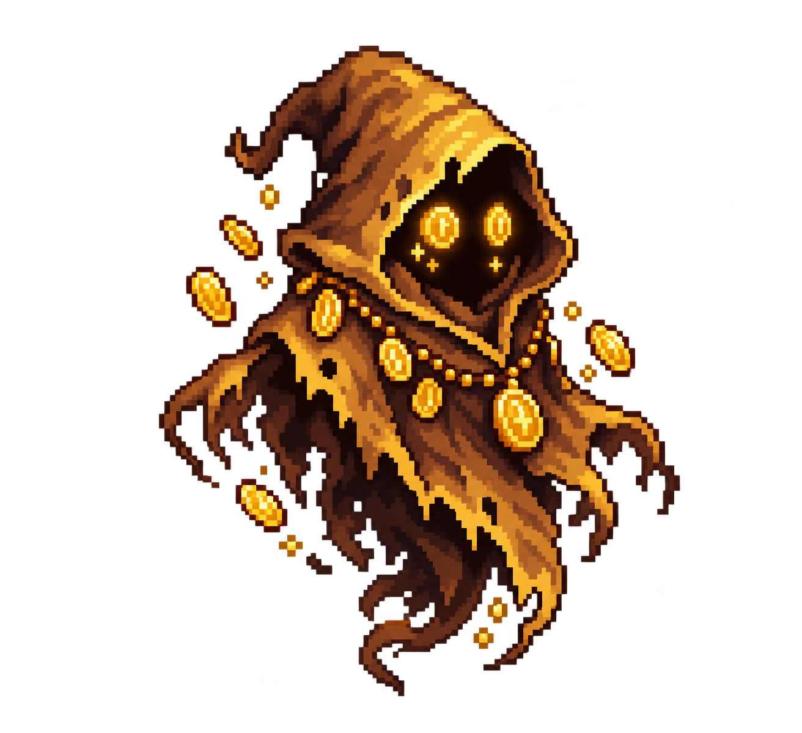
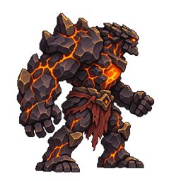
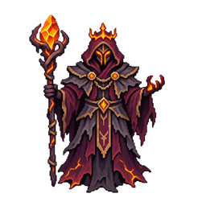
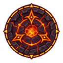

전사
기본 해금체력 100 · 이동 220
검 12 피해 · 1.5초 · 사거리 125
근거리 검격으로 전방 반원을 베는 입문자용 캐릭터.
캐릭터 · 몬스터 · 보스 · 강화 · 진화 트리 안내
20분 동안 마차를 지키며 몰려오는 적을 처치하고, 길 위의 선택으로 여정의 결말을 바꿉니다. 플레이어는 직접 움직이고 마우스로 공격 방향을 정합니다.

보스전 중 시계 정지 · 보스 처치 후 배경 전환
일반 몬스터는 시작 2초 뒤 생성되며, 초기 3초 간격에서 시간이 흐를수록 최대 1.2초 간격까지 빨라집니다. 동시에 최대 36마리까지 존재할 수 있습니다. 일반 적의 체력은 생성 순간 레벨과 경과 시간에 따라 결정됩니다.
기본 체력 · 이동 속도 · 공격 계수

체력 100 · 이동 220
검 12 피해 · 1.5초 · 사거리 125
근거리 검격으로 전방 반원을 베는 입문자용 캐릭터.

체력 90 · 이동 245 · 피해 0.95배
화살 10 피해 · 1초 · 사거리 350
마우스 방향으로 화살을 멀리 날립니다. 기본 관통은 없습니다.

체력 82 · 이동 210 · 피해 1.05배
파이어볼 15 피해 · 0.88초
화상 파이어볼과 얼음·번개 마법으로 적을 제압합니다.
체력 95 · 이동 215 · 피해 0.90배
산탄 3발 · 발당 7 피해 · 0.76초
금화를 흩뿌리고, 머니 밤으로 폭발 수익을 노립니다.
마차 내구도 250
마차가 파괴되면 원정은 패배합니다. 보호 대상을 지키면서 적의 위치와 공격 방향을 관리하세요.
황금 임프는 생성의 5%

체력 10 · 속도 60 · 피해 9
3 XP · 1 G · 플레이어 우선
체력 8 · 속도 132 · 피해 12
4 XP · 2 G · 마차 우선

체력 20 · 속도 72 · 피해 8
처치 시 네 보상 중 하나 드롭
| 황금 임프 보상 | 효과 | 획득 방식 |
|---|---|---|
| 쌓인 금화 | 10 G | 바닥에 떨어집니다. 플레이어가 직접 닿아야 획득하며, 30초 후 사라집니다. 마지막 5초는 점멸합니다. |
| 경험치 | 현재 코드 기준 15 XP | |
| 하트 | 최대 체력의 10% 회복 | |
| 수리 도구 | 마차 내구도 40 회복 |
체력 배율: `올림(기본 체력 × [1 + (레벨−1)×0.15 + 경과 분×0.15])`. 생성 시 한 번 계산합니다.
보스전 동안 원정 시계와 새 일반 적 생성은 정지

6초마다 2초 돌진 예고.
속도 1,000 · 충돌 피해 40.
벽 충돌 시 4초 기절, 받는 피해 1.5배.

화면 가장자리 중앙으로 순간이동.
마법진 반경 100, 3초 뒤 폭발.
한 번 맞으면 파괴, 폭발 피해 25.

기본 2초 간격 소환, 체력에 따라 1.5초까지 빨라집니다. 체력 50% 이하에서는 매 주기 플레이어 자리에도 추가 소환.
| 시간 | 보스 | 기본 체력 / 접촉 피해 | 상태 |
|---|---|---|---|
| 5분 | 용암 거인 또는 라바 매지션 | 220 / 20 | 50% 확률로 한 종류 출현 |
| 10분 | 성채 장군 | 180 / 18 | 임시 보스 |
| 15분 | 숲의 수호자 | 250 / 22 | 구현됨 |
| 20분 | 빙의된 공주 또는 왕과 근위병 | 각 360 / 24 | 카르마 분기 |
네 트리 중 무작위 두 개 제시 · 하나 선택
전사가 회전하며 반경 안의 적을 공격합니다. 시작 피해는 검 피해의 50%, 0.5초마다 공격합니다. 공격 속도는 회전 속도에, 검 사거리는 이펙트 범위에 반영됩니다.
승리를 위한 회전5단계. 회전당 피해 비율이 단계마다 +10%p, 최대 100%.
선택 즉시 공격 주기에 검격 2회. 연속 공격으로 한 방향을 집중 타격합니다.
N도류3단계. 레벨마다 검격 1회 추가, 최대 5회.
검을 휘두를 때 긴 사거리의 초승달 검기를 발사합니다. 첫 타격은 100% 피해.
검기 강화4단계. 추가 적중 수 +1. 관통할 때마다 다음 적의 피해와 검기 크기가 20%p씩 줄어듭니다.
최대 체력 증가분, 체력 재생, 반사 피해가 2배. 주위 150 범위에 0.5초마다 열기 피해.
뜨거운 열기5단계. 열기 피해가 단계마다 +2, 최대 12.
현재 5분 진화 트리는 전사만 구현되어 있습니다.
원정 중 경험치 강화 · 원정 사이 골드 영구 강화
| 강화 | 단계당 효과 | 최대 |
|---|---|---|
| 튼튼한 체력 | 최대 체력 +10 | 5 |
| 무기 숙련 | 모든 공격 피해 +5% | 5 |
| 급소 노리기 | 치명타 확률 +2%p | 5 |
| 민첩한 발걸음 | 이동 속도 +6 | 5 |
| 빠른 손놀림 | 공격 속도 +10% | 5 |
| 들끓는 심장 | 초당 체력 재생 +0.2 | 5 |
| 마차 보강 | 마차 내구도 +20 | 5 |
| 배움의 길 | 경험치 획득 +5% | 5 |
| 행운의 주머니 | 골드 획득 +5% | 5 |
| 단단한 갑옷 | 받는 피해 −2%p | 5 |
| 두 번째 기회 | 원정 부활 +1회 | 3 |
일반 강화 가격은 100 / 125 / 150 / 175 / 200 G. 부활 강화 가격은 100 / 125 / 150 G. 사망 시 5초 뒤 최대 체력 절반으로 부활하며 2초 무적입니다.
| 캐릭터 | 훈련 | 효과 | 비용 |
|---|---|---|---|
| 전사 | 가시 갑옷 | 피격 반사 비율 +5%p, 최대 25% | 5단계 공통 가격 |
| 전사 | 도발 | 반경 200 안의 마차 우선 적이 전사를 공격 | 500 G |
| 궁수 | 대쉬 | 스페이스바: 이동 방향 160 돌진, 0.25초 무적, 쿨타임 4초 | 500 G |
| 마법사 | 바람 정령의 가호 | 스페이스바: 반경 200 넉백, 쿨타임 8초 | 500 G |
| 상인 | 머니 밤 | 스페이스바 설치, 3초 뒤 폭발, 쿨타임 12초. 피해 40 시작, 단계당 10% 증가 | 5단계 공통 가격 |
카르마 범위 −100 ~ +100
| 시점 / 사건 | Yes | No |
|---|---|---|
| 3분 · 성채의 전령 | 카르마 +12 · 마차 −12 · 골드 −2 | 카르마 −8 · 골드 +2 |
| 6분 · 버려진 보급 마차 | 카르마 −5 · 마차 +8 · 골드 +8 | 카르마 +6 |
| 9분 · 포로 정찰병 | 카르마 +14 · 마차 −8 | 카르마 −11 · 골드 +5 |
| 12분 · 마을 피난민 | 카르마 +16 · 마차 −18 · 골드 −3 | 카르마 −13 · 골드 +6 |
| 18분 · 숲길 약초꾼 | 카르마 +10 · 마차 −10 | 카르마 −5 · 골드 +5 |
구현 차이: 모든 이벤트에서 가장 악한 답을 골라도 카르마는 −42입니다. 따라서 현재 정상 플레이로는 악 결말에 도달하지 못합니다. 악 루트 클리어 보상인 흑화 전사도 아직 구현되지 않았습니다.
DEX 사내 계정으로 로그인
| 기능 | 현재 동작 |
|---|---|
| 로그인·프로필 | Microsoft Entra ID로 인증. 골드, 캐릭터 해금, 상점 강화·훈련을 저장합니다. |
| 임시 저장 | 원정 중 저장하고 이어서 플레이할 수 있습니다. |
| 점수 | 처치 수×100 + 생존 초 + 보스×500 + 클리어 보너스 2,000. 상위 10위 표시. |
| 골드 서버 보상 | 처치 수 + 생존 분당 5 G + 클리어 보너스 50 G. |
| 클리어 랭킹 | 캐릭터와 카르마 티어별로 구분. |
알려진 동작 차이: 전투 중 획득한 골드(몬스터·이벤트·머니 밤)는 결과 제출 데이터에 포함되지 않아 현재 프로필 골드에 더해지지 않습니다. 황금 임프 경험치 드롭은 “처치 시점 일반 몬스터 XP의 5배” 기획과 달리 현재 고정 15 XP입니다.
현재 게임에서 사용하는 이미지
사용 스프라이트는 이 HTML과 같은 위치의 gameplay-overview-assets 폴더에 함께 있습니다. 폴더를 유지한 채 HTML을 열면 되며, 기존 웹앱 실행은 필요하지 않습니다.
문서의 수치는 2026-11-17 저장소 `main` 기준입니다. 밸런스 변경 시 이 안내서도 함께 갱신해야 합니다.